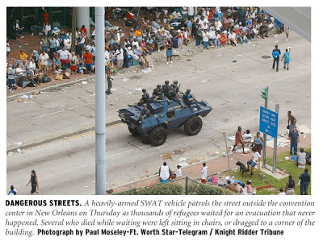
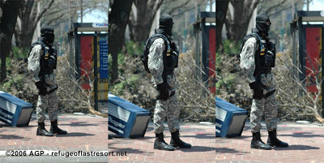

Freedom! Glorious freedom! A young American celebrates the freedom to pee under the kindly gaze of one of our nation's many fine paramilitary police officers.
"A nation of slaves is always prepared to applaud the clemency of their master, who, in the abuse of absolute power, does not proceed to the last extremes of injustice and oppression." --
Edward Gibbon, Decline and Fall of the Roman Empire
Like the inhabitants of other formerly free societies, Americans are content to define "freedom" in terms of those liberties we are permitted to exercise. Yesterday's Supreme Court ruling in District of Columbia v. Heller (.pdf) is perfectly in harmony with this self-defeating concept of "freedom."
It is entirely appropriate that the decision was written by Antonin Scalia, the most reliably authoritarian and consistently liberty-averse member of the Court. With an air of regal condescension, Scalia allows that the Second Amendment acknowledges and protects an individual right to armed self-defense. He then explicitly limits the extent to which that "right" can be exercised, thereby redefining it as a State-conferred privilege.
We can't really expect a statist creature like Antonin Scalia to embrace the view that the right to keep and bear arms includes the right of citizens, acting either individually or collectively, to kill agents of the state when such action is necessary and morally justified. Any other view of the Second Amendment is worse than useless; this is certainly true of the view that emerges in Scalia's Heller opinion.
"The Second Amendment protects an individual right to possess a firearm unconnected with service in a militia, and to use that arm for traditionally lawful purposes, such as self-defense within the home," summarizes Scalia at the beginning of his opinion (emphasis added).
A few paragraphs later Scalia elaborates a bit on the implied limitations of the "right" he describes. Insisting that previous Court rulings effectively limit "the type of weapon to which the right applies to those used by the militia, i.e., those in common use for lawful purposes," he asserts: "Like most rights, the Second Amendment right is not unlimited. It is not a right to keep and carry any weapon whatsoever in any manner whatsoever and for whatever purpose.... Miller's holding that the sorts of weapons protected are those `in common use at the time' finds support in the historical tradition of prohibiting the carrying of dangerous and unusual weapons." (Emphasis added.)


Nothing "dangerous and unusual" here: Combat-armed occupation troops patrol Katrina-ravaged New Orleans as part of an operation that included disarmament of law-abiding citizens.
When government grants a liberty and then restricts the manner in which it can be used, the result is not a right, but a limited, conditional license. Scalia's passage cited above will inevitably be seen as a license from the court for legislative bodies to enact, or fortify, laws against "dangerous and unusual" weapons -- such as the scary-looking guns ritually denounced as "assault weapons, for example. And other even more troubling portions of his opinion will abet further restrictions on the purposes for which firearms can be used.
At various points in his opinion, Scalia brushes up against the radical origins of the Second Amendment. For example: "The Antifederalists feared that the Federal Government would disarm the people in order to disable [the] citizens' militia, enabling a politicized standing army or a select militia to rule. The response was to deny Congress power to abridge the ancient right of individuals to keep and bear arms, so that the ideal of a citizens' militia would be preserved." (Pg. 2; see also 22-28)
The clear implication here is that the "ancient right of individuals" to armed self-defense includes the right to organize for the purpose of insurrection against a tyrannical government. Scalia revisits that theme in reviewing efforts by George III's government to disarm American colonists (pg. 21). Discussing the ancient origins of the right, Scalia notes that "the Stuart Kings Charles II and James II succeeded in using select militias loyal to them to suppress political dissidents, in part by disarming their opponents" (pg. 19). He quite usefully admits that "when able-bodied men of a nation are trained in arms and organized, they are better able to resist tyranny" (pp. 24-25), without teasing any specific application from that provocative observation.
Although he draws only scantily from the vast corpus of insurrectionary writings by the Founders that deal with the right to armed self-defense (the most notable being Madison's endorsement, in Federalist essay 46, of direct military action against a tyrannical central government), Scalia does cite some interesting literature of that sort from the mid-19th century.
For instance, he quotes John Norton Pomeroy's 1868 book An Introduction to the Constitutional Law of the United States, which stated that the Second Amendment would make no sense unless it enables citizens "to exercise themselves in the use of warlike weapons. To preserve this privilege, and to secure to the people the ability to oppose themselves in military force against the usurpations of government, as well as against enemies from without, that government is forbidden by any law or proceeding to invade or destroy the right to keep and bear arms...." (emphasis added).
Given the chance, they'll grab your guns: A house-to-house gun grab in New Orleans.

From the foregoing it's clear that Scalia is aware of the insurrectionary origins and purpose of the Second Amendment. Passages of that sort are scattered through the 67-page opinion and left without significant elaboration.
What's even odder is the fact that Scalia, drawing on Joseph Story's immensely influential Commentaries, asserts that the "free state" to be defended by the people under arms is not the individual state they inhabit -- as the Founders would have understood -- but rather the unitary nation created as a result of the Union victory in the War Between the States (pg. 24).
Scalia appears to be saying that while the right to bear arms was associated with the colonial and state militias, that right does not exist exclusively to carry out that function. But he also seems to assert that since the modern "militia" is an institution controlled by the central government and devoted to its protection, there's no longer a legitimate right to armed self-defense against the government.
On this point, Scalia's analysis is difficult to distinguish from that offered by the dissenting judges, who would simply dispense with the right to bear arms entirely, rather than paying lip-service to it while denying its chief purpose and encouraging various encumberances on it, as Scalia does.
"Undoubtedly some think that the Second Amendment is outmoded in a society where our standing army is the pride of our Nation, where well-trained police forces provide personal security, and where gun violence is a serious problem," Scalia concludes. "That is perhaps debatable, but what is not debatable is that it is not the role of this Court to pronounce the Second Amendment extinct."
Indeed not: Scalia's opinion suggests that the role of the Court is to placate key elements of the Republican coalition while suggesting alternative routes to those who seek the eventual abolition of the right that was once protected by the Second Amendment. While Scalia's ruling reinforces one of the few effective rallying points for the demoralized Republican Party ("This year's election is all about the judges!"), it does nothing of substance to defer the day when some judge or president will be able to pronounce the Second Amendment extinct.
This point simply can't be emphasized too often: The innate right of armed self-defense exists whether any government chooses to recognize it. What made the Second Amendment unique was its recognition of the fact that in the constitutional scheme, the government does not have a monopoly on the legitimate use of force. Scalia, like many statist jurists before him, insists that the permissible civilian uses of firearms are all defined within that government-exercised monopoly on force; they are temporary concessions that can be redefined by our rulers at whim.
In a genuinely free society, citizens would enjoy the unqualified liberty to acquire weapons of any sort, in any quantity they pleased, for the specific purpose of being able to out-gun the government and its agents when such action would be justified.


Your friendly neighborhood stormtrooper on patrol in New Orleans: If they were really the Good Guys, would they dress like this?
Most Americans, as ignorant of our heritage of principled insurrection as they are well-versed in the ephemera of degenerate pop culture, would find such sentiments abhorrent. In that fact we see that -- whatever may be the status of our current "right" to keep and bear arms -- the intellectual and psychological disarmament of our population is nearly complete.
Errata
Please note that the original version of this essay cited Federalist essay 45 rather than 46, although the link was correct. My thanks to LewRockwell.com reader Brian Martin for catching this error (and many thanks to Lew for republishing this essay on his irreplaceable website).
Also, in the original version of this essay I omitted the word "asserts" following mention of "... Joseph Story's immensely influential Commentaries...."
Ah, the dangers of being one's own copy editor, particularly when the author in question frequently finds himself writing with a youngster clinging to one arm....
 On sale now!
On sale now!Dum spiro, pugno!
24 comments:
Cmon Will, celebrate a little bit - it could have been worse - we could have gotten a collective right ruling.
I started to argue with the first comment ... then I remembered that I said during the Clinton junta that "it couldn't get worse" -- then Bush II took office, and it promptly got worse. Lesson learned: it can always get worse.
That said: I think the Supremes' decision is, indeed, a horrible result.
There was a time, in a galaxy far far away, that I respected Scalia. No longer.
Still, the most recent SCOTUS ruling seems more like a bone thrown to the dogs to placate them.
The high theatrics we've been privileged to watch as serfs to the Union will continue.
Jim, I disagree in part. As I said - we NEEDED an individual rights ruling - imagine the opposite. Surely you dont think the right is 'collective', as left liberals claimed?
Anything, yes anything at all, that limits the feds in some respects is a good thing. Would upholding a tyrannical ban have increased anyone's liberty?
Good post here about that -
http://www.lewrockwell.com/blog/lewrw/archives/021709.html
Another point Jim - if we go down the road of pre-1861 Federalism (which I would love, I should add) then oddly enough there a few constitutional amendments that are themselves unconstitutional.
Take the 13th for instance. It imposes a ban on slavery over the states. (NOTE - I am not supporting slavery here) The triumph of the Lincoln regime was also a triumph of centralized national government. So if the 13-15, 17, 19, 24 and 26th Amendments are still in effect - how can we claim that this hurts the Constitution?
I think Warren Mass over at JBS had it right - the state and local government, by and large, are pawns of the feds anyway.
"A nation of slaves is always prepared to applaud the clemency of their master, who, in the abuse of absolute power, does not proceed to the last extremes of injustice and oppression." --
Edward Gibbon, Decline and Fall of the Roman Empire
It bothers me to hear over and over at church. "Thankful for our freedom we have in this country" "Thankful for our freedom to worship God in this country many around the world do not have the freedom that we enjoy" Its hard to explain why it bothers me. Maybe I am simply not as thankful as some others.
I rather think the quote above puts it in perspective.
I was standing with someone protesting state approved Murder outside an American killing center. He made the comment that he was thankful that we still have the freedom of speech to be able to protest. I was a little uncomfortable again but still couldn't explain why.
If a human is being Murdered with the state's blessing. If he or she is Murdered with parental or judicial consent with allowance of many Christians a few feet from where I stand. Why should I be thankful to a state for allowing me to cry out against it. If it was your teenage daughter or wife and the sheriff drove by without caring? Would you still celebrate the freedom of speech granted by the state?
Maybe since many willingly send their children to Iraq to kill and be killed. Theoretically you wouldn't have to be that much more drugged to put up with the killing of your children in your own city.
"...the intellectual and psychological disarmament of our population is nearly complete."
I kind of like the preacher that got arrested in this video. He says "I'm thankful for the freedoms in our country to be able to proclaim the word of God" He changed the wording a little as he got arrested. He said "our freedoms are being taken away.
Will is right.
-Sans Authoritas
It should be noted that two of the dissenting judges, including the author of the dissent, were appointed by Republicans. So much for voting R so we get good judges. Anyhow, you're quite right will. The founders said the philosophy dictated we have unconditional access to "every terrible instrument of the soldier." That means anything the common foot soldier carries: handguns, rpg's, automatic carbines, shotguns, and long range rifles. PERIOD. Funny and insulting Scalia says banning the M16 is debatable. If the right protects any weapoon, it's the freakin M16!!
T2T brings up an interesting point (at least in my mind). Why thank God for having the 'freedom' to be powerless and allow a government to do things that violate HIs law and are an abomination to Him? This thought process represents the collective disconnect so prevalent in the Church today. We're so stuck on counting our "blessings" that we've become wimps.
The Second Amendment recognizes our right to "bear arms" for the purpose of actually using them in self-defense, not so we can keep them locked up in a closet. That goes for the First Amendment as well. When the government quits listening and obeying through a redress of grievances, it's time to party - Boston style.
BTW, why stop at a fully automatic m-16? I should have the right to possess and use if necessary, the latest technology the godverment has.
Most Americans, as ignorant of our heritage of principled insurrection as they are well-versed in the ephemera of degenerate pop culture, would find such sentiments abhorrent. In that fact we see that -- whatever may be the status of our current "right" to keep and bear arms -- the intellectual and psychological disarmament of our population is nearly complete.
Yep, indeed, that last paragraph about wraps it up in a nice, neat summary conclusion. Again, the concept of self-government - which is a critical requirement for the proper, responsible, and complete exercise of one's God's given rights - is almost unknown amongst today's citizens.
Concerning the ruling specifically, I agree that Heller fails miserably in adequately arguing the true and real purpose of the 2A.
For example, when Scalia stated, "...such as self-defense in the home" as an example of what the 2A provides, he didn't expound on it beyond that, as you point out, and as he perhaps should have.
Nevertheless, "such as" does, however, imply provisions in addition to just merely self-defense in the home. Yes, it's quite lame and Scalia does leave too much ambiguity, but I'd still have to look at it somewhat as daniel maxwell sees it in that regard.
We also must be mindful of the fact, according to the syllabus, that this case only made it to SCOTUS in the first place by a district court dismissal, then a Circuit Court reversal, of a suit filed by Heller to keep firearms in his home w/o a trigger lock so as to be functional for home self-defense. The problem is that Heller himself conceded (perhaps in ignorance) to licensing and other constraints, as long as they merely not be arbitrarily and capriciously applied; ergo, the Court unfortunately, or perhaps "cleverly," so limited its focus.
I also believe that if Scalia had broadened the argument to cover the entire 2A gamut as you are arguing here, I'm sure Kennedy, for one, would've dissented, keeping the arbitrary firearm prohibitions intact.
All that said, I certainly agree with the sentiment that overall this ruling is a Pyrrhic victory at best for the long-term recognition by government (local-state-fed), and thereby protection, of the God-given, pre-existing right to keep and bear arms.
Whatever the pulse of the citizenry/culture, so shall it be reflected, sooner or later, by government officials and coppers who hail from that same citizenry/culture. After all, we can't logically expect a "Marilyn Manson" culture to produce a "George Washington" government.
zach,
i think you missed what Will was saying (and i hear this mistake so often) when you said:
"That means anything the common foot soldier carries: handguns, rpg's, automatic carbines, shotguns, and long range rifles. PERIOD. Funny and insulting Scalia says banning the M16 is debatable. If the right protects any weapoon, it's the freakin M16!!"
the 2nd says nothing about "what the common foot shoulder carries". Don't limit yourself! :-) I think Will meant it in these terms (and i'll use a modern example):
--if the branch davidians:
:had Javelin anti-tank missiles, or AT-4 light armor defeating rockets, then the armored vehicles would not have come even close to their church. and if they had, they would have been destroyed.
:had Stinger missile launchers, then the helos used against them would not have approached to within 7km of their church, or else would have been destroyed.
:had M240B or M2 machine guns, then there would have never been any assault on their church, and those guys shooting them from behind their building, would have never gotten so close.
:had indirect fire capability in the form of hand grenades, 40mm grenade launchers, mortars (60mm, 81mm, or 120mm), or artillery pieces, then the staging area for the raid would have had to have been miles away, thus making the operation feasibly impossible.
we cannot allow elected officials to broadly interpret their constitutional powers (ie: interstate commerce clause), and then let the same group narrowly interpret our rights (2nd amendment). if they are gonna apply "original intent" to us, then they must also apply it to themselves. what has happened over the years is that we've allowed those who would do us harm, the ability to choose what we can fight them with. it's the perfect unfair fight.
well, in parting, i have a saying, "buy it now, while it's still legal." and to that i add that if you plan on buying anything that is currently in some politician's sights, then you buy it with cash or any other untraceable means. It will get worse. God said so. was anyone shocked at that Visa commercial when the guy went to write a check? our "states" are slowly becoming what Thomas Jefferson called, "like the departements in France"--mere political extensions of the federal govt. everything is lining up for a one world govt. it's coming. we cannot stop it, but we can: 1) prepare for it, and give our posterity the means to resist/survive as well; and 2) ...and we must fight for every inch of ground we stand on. we have no idea what God will do if we stand, and who knows how much time we may buy or what we may be setting up for His purpose.
rick
I like your use of the term "misdirection". Any football fan knows that a misdirection play involves faking -- not just the ball carrier, but the blocking scheme as well -- in one direction and then running the ball in the other direction. Misdirection is legitimate on the gridiron, but not with regard to our liberties.
Daniel Maxwell, the fact five of the Nine Nazgul used the phrase "individual right" is effectively meaningless when their opinion made it obvious the "right" is nothing but a privilege subject to arbitrary restriction, even revocation, by the government. Scalia wrote about an "inherent right" of self-defense then declared millions of Americans - felons (most of whom committed nonviolent, often victimless, mala prohibita "crimes"), people with certain misdemeanor convictions under the Lautenberg Amendment, etc. - have no such right here in the Land of the Free. So much for the concept of unalienable individual liberties, the moral basis behind creation of the USA.
Scalia was very clear that only certain Americans had any Second Amendment rights. I'm confident the Framers meant "the people" mentioned in the Second Amendment are the same "the people" referred to in the First and Fourth Amendments.
The court ruled D.C. officials had to issue Heller a license so long as he's one of the persons Scalia thinks are "allowed" to possess firearms, and then only certain government-approved ones. Why does anyone need to beg for a license before exercising an unalienable individual right every human being is born with?
Zach :
"The founders said the philosophy dictated we have unconditional access to "every terrible instrument of the soldier."
I think you misunderstand the benelovence of the state towards it's citizenry.
The 'terrible instruments' are only for neighboring armies to rampage and war against the no longer free,zombie-ized sheep headed for slaughter.
How easy has it become for
Pravda State to disinform the public with their spin and lies and how easy they all lap up their flood of lies.
The uber alles ever wise state still protects bad Mexican tomatoe's for their Babel New World Order by selling us their ignorance of the cause over a month into this the latest of their many,many failure's to do their job
George Orwell didn't see the half of it.
***
While on the J.D. Hayworth show Tuesday, a top member of a Phoenix police union announced that the suspects were active members of the Mexican Army hired by drug cartels to perform home invasions and murders
He added that all of them were dressed in military tactical gear and armed with AR-15 assault rifles. Three other men involved in the invasion escaped.
http://kfyi.com/pages/local_news.html?feed=118695&article=3875223
Any story to go with that opening picture?
I know it's on American soil, but at the same time it CAN'T be on American soil. It's.... just sad.
Scott, that photo was taken in Durham, N.C. during a neighborhood drug raid by the local SWAT team.
Radley Balko gives the background here:
http://www.theagitator.com/2006/12/10/1000-words/
I have read that collectivists will sometimes advance, retreat a bit, and then advance farther. I guess we will see more restrictions in the guise of improving or clarifying the 2A.
By the way, the most important threat to your freedom is your neighbor. Your neighbor enables the system, votes for the system, supports the system, wants you to shut up about its effects on his liberty.
He wants to be ruled by other people, not by himself. If his life turns bad, he can say that his rulers made him be miserable. If he is a self-ruler, he is responsible for his own misery. And he does not like self-rulers, because he sees the joy in their lives as a reproach to him.
Your neighbor will support Scalia et al, and the police who kill you.
Doc Ellis 124
"This point simply can't be emphasized too often: The innate right of armed self-defense exists whether any government chooses to recognize it."
You cite deep, axiomatic Truth.
Thank you, Will Grigg.
Carry on.
Sorry if this is tangential to the subject; but we can all download the audio version of Gibbon's Decline & Fall of The Roman Empire. Speaking for myself, this is likely the only way I'll experience this classic.
Go here:
http://librivox.org/the-decline-and-fall-of-the-roman-empire-vol-i-by-edward-gibbon/
I must emphasize that the constitution does not give us our rights we have them whether 9 corrupt guys in black robes say yea or nay.
There is a side of the debate over the constitution that is rarely mentioned, that the founders knew and acknowledged,
To Wit, that the supreme court is part of the central government and to expect it to rule against their own power is ludicrous.
Tom Jefferson promulgated the principles of 1798 in which it is in the states powers to nullify any bad law, or to ignore any bad decision from Scotus and to ignore any bad regulation from the executive.
Read the following from Virginia's constitutional ratifying document:
WE the Delegates of the people of Virginia, duly elected in pursuance of a recommendation from the General Assembly, and now met in Convention, having fully and freely investigated and discussed the proceedings of the Federal Convention, and being prepared as well as the most mature deliberation hath enabled us, to decide thereon, DO in the name and in behalf of the people of Virginia, declare and make known that the powers granted under the Constitution, being derived from the people of the United States may be resumed by them whensoever the same shall be perverted to their injury or oppression, and that every power not granted thereby remains with them and at their will: that therefore no right of any denomination, can be cancelled, abridged, restrained or modified, by the Congress, by the Senate or House of Representatives acting in any capacity, by the President or any department or officer of the United States, except in those instances in which power is given by the Constitution for those purposes: and that among other essential rights, the liberty of conscience and of the press cannot be cancelled, abridged, restrained or modified by any authority of the United States.
from
http://www.usconstitution.net/index.html U.S. Constitution Online
Since the central government now runs wild we must pressure our state governments to nullify usurpations of the central government , just like 19 states have rejected the Real ID law.
I am not sanguine about the practical results of this idea. If we do not use this power then there doesn't seem to be any other course but for the people en mass to withdraw our consent.
I have to simply say this was one of the most brilliant articles I've read on LRC. Thank you very much. I posted a link to it on the ccwNebraska forum to which I belong. Hopefully some more people will start paying attention.
Robin Winterset
Will, this is an excellent article.
In one fell swoop, the SC has taken away one of Second Amendment supporters' best arguments: individual rights--by using the term "right" but changing the meaning to "priviledge."
It will not be only a brief matter of time before general disarmament marches on. The other side will say, sure, you have a right to arms, but all our gun laws are Constitutional, so hand them over!
At which time, we may find ourselves saying: "Come And Take It!" http://www.comeandtakeit.com
http://www.comeandtakeit.com/doofis.gif
Sorry Will, I respectfully disagree. The Court's decision protects the right to bear arms much more than you are claiming. Please re-read pp. 62-63 of the Opinion.
The Court rejected the "interest-balancing" approach and equated the right to bear arms to freedom of speech. "We know of no other enumerated constitutional right whose core protection has been subjected to a freestanding 'interest-balancing' appraoach ... We would not apply an 'interest-balancing' approach to the prohibition of a peaceful neo-Nazi march through Skokie."
In other words, the Court apparently adopted a strict or intermediate scrutiny test to the right to bear arms. Because of this opinion, it will very difficult (not impossible) for the demagogues in Washington to impair the right to bear arms.
Please also remember that Scalia did have to draft an opinion that four other judges would sign - to strengthen the holding.
Sorry, benhortonesq, but I have to disagree with you. While quacking about an "individual right," "inherent right" to self-defense, and comparing the RKBA with the freedom of speech, Scalia & Company contradicted their own words. A woman with a tax or marijuana conviction many years ago faces a decade in prison under GCA-68 if she possesses a firearm for protection against robbers, rapists or murderers and Scalia has no problem with this. So much for the "inherent right" of self-defense.
The majority held the words "the people" in the Second Amendment referred to the same "the people" mentioned in the First and Fourth Amendments then promptly contradicted themselves as Justice Stevens noted in his dissent. Scalia excluded millions of Americans from any Second Amendment protection. Under Heller, the only people "protected" by the Second Amendment are those the Feds allow and then the "right" is nothing more than a privilege to possess only certain weapons; a privilege which legislators can restrict or rescind at will. Some "individual right." SCOTUS correctly applies the First and Fourth Amendments to everyone inside the USA; but not the Second. I'm confident that's not what the Founding Fathers (felons who committed treason, sedition and armed rebellion against their "lawful" government) had in mind.
Post a Comment